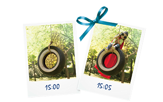

GSK e信使形象大使
报名投票系统
e信使是什么
e信使，万托林在医脉通平台的呼吸领域形象代言人，呼吸科医生最贴心的的学术联络官。
传递学术信息，解答医生难题。
代表获益：
降低拜访的难度——e信使可以提高品牌对医生的曝光率，降低代表在拜访医生时的难度
增加拜访的话题——代表拜访医生客户时：“我们最近在医脉通平台上线了万托林e信使……”
提高拜访的质量——e信使更专业的学术内容可以辅助代表实施学术宣传，从而提高拜访质量
提高拜访的效率——e信使更多样的内容形式可以降低医生学习的难度，从而提高拜访效率